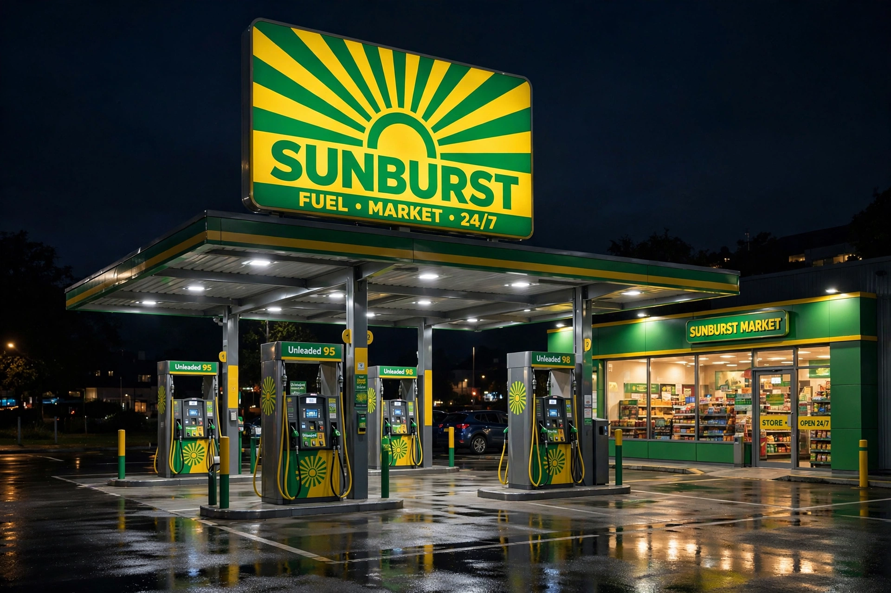

| Formerly | Anglo-Persian Oil Company; British Petroleum |
|---|---|
| Type | Public limited company |
| Industry | Oil and gas |
| Founded | 14 April 1909 (as Anglo-Persian Oil Company) |
| Headquarters | London, England, UK |
| Key people | Helge Lund (chairman); Murray Auchincloss (CEO) |
| Products | Petroleum, natural gas, petrochemicals, aviation fuel, lubricants (Castrol) |
BP p.l.c. (formerly The British Petroleum Company and BP Amoco) is a British multinational oil and gas company headquartered in London. It is one of the world's seven oil and gas "supermajors", performing exploration, production, refining and marketing in around 70 countries, and is a component of the FTSE 100 Index.
BP traces its origin to the Anglo-Persian Oil Company, founded in 1909 after William Knox D'Arcy's syndicate struck oil at Masjed Soleyman in Persia (Iran) in 1908. The British government took a controlling stake in 1914, securing fuel oil for the Royal Navy. Renamed the Anglo-Iranian Oil Company in 1935, it was nationalised by Iran in 1951 under Prime Minister Mohammad Mosaddegh, a crisis resolved after the 1953 coup. The company became The British Petroleum Company in 1954, was privatised by the UK government between 1979 and 1987, and expanded through the mergers and acquisitions of Amoco (1998), Atlantic Richfield (ARCO, 2000) and Castrol.
The 2005 Texas City refinery explosion killed 15 workers. In 2010 the Deepwater Horizon drilling rig explosion and oil spill in the Gulf of Mexico killed 11 workers and caused the largest marine oil spill in US history; BP's total costs exceeded US$65 billion, including a US$20.8 billion settlement with the US government in 2015. The Brent Spar controversy of 1995, over the proposed sea disposal of a storage buoy, also damaged the company's reputation and helped energise Greenpeace's campaigning.
In 2000 BP rebranded itself "Beyond Petroleum", and in 2020 CEO Bernard Looney pledged net-zero emissions by 2050 and large cuts in oil and gas output; elements of the plan were scaled back in 2023–2025 under his successor Murray Auchincloss, who refocused investment on hydrocarbons.